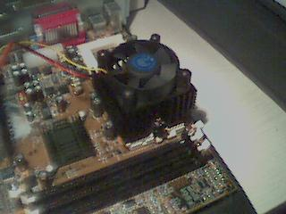

August 1999
Putting a price tag on RC5 blocks Posted Tuesday, August 31 12:42 by armin
You may be participating in the RC5-64 challenge at d.net, so this might be interesting for you.
At eBay 100k+ RC5 blocks are up for auctioning so the winner can beef up their personal stats and team with them for higher glory. Currently the price for those is $100, while more blocks are being added to the account until the auction closes.
Check it out here.
Gizmo3D 0.92 released Posted Monday, August 30 8:42 by armin
Our man Anders released a new version of his 3D engine Gizmo3D, check it out here!
TennMax MEGA7 review Posted Friday, August 27 18:04 by armin
I reviewed the coolers mentioned below in the SMP item today. If you are interested in overclocking a Super 7 or Socket 370 system you should give it a read and the cooler consideration. Check out my findings here.
SMP box and some Posted Wednesday, August 25 17:19 by armin
I received some very impressive coolers from TennMax, their MEGA7 model specifically aimed at overclockers. These are supposed to do duty in the SMP machine, which under the default coolers got to a maximum speed of 483 MHz.

Unfortunately it seems that this coincides with the max speed of the lesser quality CPU of the two, while I was able to get a stable 550 MHz out of the other one (under the MEGA7). Since it is hardly tolerable that I'd restrain a 550 MHz CPU to 483 MHz because the other guy in the team has no balls I decided to buy a third Celeron 366 PPGA that I hope will match the 550 as well (so yes, that means you can buy the 366 that does 483 if you want and live in Germany so I can send it to you - asking price 150 Marks + S&H).
As soon as the bloody mary runs at full throttle I'll do a review of the system (BP6 motherboard in particular, with which I am positively impressed already).
Future of Alpha architecture Posted Tuesday, August 24 22:18 by kornel
CPU Gurus has a new article up where we take close look to various components of overall architecture performance, and what we can expect in near future. Read the article by clicking here.
SMP box news Posted Saturday, August 21 19:43 by armin
I know it has been a while, I've been plain too busy with Athlon stuff and the G400 review to pay much attention to the SMP machine. I had it crunch away on RC5-64 24/7 to keep it busy and check the stability.
As I mentioned, the box tops out at 451 MHz with closed case right now, but I think the new MEGA7 coolers from TennMax will arrive next week and we'll see if they will improve that - from open case testing I know they're worth at least 30 MHz more.
I finally decided for the Gigabyte TNT-2 GA-660 as the video card for this machine now that I installed the NVidia XServer. I also installed NT 4.0 SP4 tonight so some comparision benchmarking may be possible if I can make the time. Q3T 1.08 for Linux is downloading as I type this, I already have the Win32 version and my curse goes out to german telekom for their lack of highspeed internet access - or affordable internet access in the first place. Perish painfully, will ya?
Anyway, I hope to have something tangible next weekend.
NVidia opens driver sources Posted Tuesday, August 17 10:00 by armin
NVidia is now offering the driver sources for their TNT/TNT-2 chips, you can access them here at their OpenView page, including an OS development kit for Linux. Good job there, NVidia, makes me proud to own your stock :)
Matrox Millenium G400 review Posted Monday, August 16 20:58 by armin
I just completed a Windows 98 based review of the G400 which you can read here.
The interesting part about it is that there will be an XServer for this board in Suse 6.2 so we can actually use it under Linux from the start. Benchmarks were taken on the K6-III, Celeron and Athlon for this review.
Gizmo3D to receive 3DNow! speedups Posted Saturday, August 14 15:52 by armin
The Gizmo 3D project hosted here and written by Anders Modén and 3DNow.Org, the campaign for the proliferation of 3DNow! support will team up and optimize some of the code of Gizmo 3D in the 3DNow! workshop over the next few weeks.
Linux-Mandrake to support KOffice Posted Tuesday, August 10 22:20 by kornel

I know this is not 3D related news however I post it since Gaël Duval from MandrakeSoft takes upon his precious time to come over the site and send every major MandrakeSoft related news to us. Thanks! So here it goes:
" MandrakeSoft, the company behind the popular Linux-Mandrake Linux distribution will finance David Faure, core-developer at KDE to work for the KOffice and KDE projects. David Faure has been a core developer for the KDE project for two years, maintainer of the KDE file manager (kfm) and its rewrite, OpenParts-based (konqueror). He has also participated in the development of the KDE libraries, including KOM/OpenParts, as well as the development of KOffice itself. " You can read the PR over here.
3dfx to support DRI Posted Monday, August 9 12:09 by dropn
According to this article over at quicken.com, 3Dfx plans to add support for Precision Insight's Direct Rendering Infrastructure in their future drivers, which should greatly improve speed and efficiency in all opengl applications. Of course, you will have to wait till a XFree86 4.0 release or pre-release is available that these drivers will work with, but hopefully this will be fairly soon.
This guy needs a hand, he is running a petition Posted Sunday, August 8 20:24 by kornel
One of the readers is seeking help; he is
petitioning IBM to Open Source "Aglets" (mobile agent technology; which are internet applets that can move from host to host. Here is the email:
Hi,
I would like to ask some advice please. I am currently running a
petition to try to persuade IBM to release
the Aglets package as an Open Source project. There are
rumours escaping IBM that they might shelve the project and
understandably the Aglet community are concerned.
I would appreciate any advice you could give me on this matter. You can find out more about the petition at:
http://luckyspc.lboro.ac.uk/Aglets/Petition/
Many thanks
Todd
Athlon/Pentium 3 Price Comparison Posted Sunday, August 8 20:20 by kornel
For those of you looking for the latest CPU out there, CPUReview presents the "Athlon/Pentium 3 Price Comparison" for your reading
pleasure...
Massive OS Supertest Posted Sunday, August 8 20:13 by kornel
Sandy Smith from Reviews-R-Us sent word that they are having a huge Alternative Operating System Supertest, and guess what? - Linux looks to be the star of the show. In the Linux part of this supertest alone their looks to be plenty of good articles, reviews and interviews, with reading for every level of Linux (and non-linux) users. But we need your help in order to make this happen. Basically, we need help with writing articles and reviews, and if you are into programming games, then we would especially like to speak to you. But anyone, with any level of experience can help. After all, its important that we get the views of a wide range of people.
So if you feel you could help in any way, please please speak to Sandy Smith ( sandy@reviews-r-us.com ) and he will help you out with what you can do. Remember, the more that volunteer, the better it will be for everyone, and so the more people we can get into using Linux. And that can never be a bad thing.
The Reviews 'r' Us URL is: http://www.reviews-r-us.com , and here you can always find the latest info about the supertest.
Athlon video card shootout Posted Sunday, August 8 14:45 by armin
Seeing that there is great interest in the Athlon (that must be the lowballing of the year), Full On 3D has an interview with AMD revealing the future of Athlon and K6-X and I also tested most current 3D accelerators on the Athlon 600 in a grand shootout (under Windows 98) to determine which of the boards can be recommended and which are just a waste of CPU speed.
Those findings you can read about here.
If you don't plan to buy an Athlon yet but want to invest in a new video board, this review will also help you to see where the current boards max out their performance and which are suitable as upgrades to an Athlon at a later time.
X11Spy - 0.2 Posted Friday, August 6 9:43 by riptide
This new release has a fix for a bug that occured when the new q3test was released, and I also added code to sort all of the servers by the master server they were loaded from.
SMP Update Posted Thursday, August 5 21:12 by armin
Not sure if you care a damn about these updates :) Anyway, I confirmed stability at 471 MHz and moved 11 MHz higher, it ran for an hour now without crashing and will have to pass another night before I certify it as stable.
Athlon and Linux? Posted Wednesday, August 4 11:37 by armin
I got the Athlon review machine from AMD today and intend to check it out under Linux as well once I completed the required video card testing etc. I may make it a comparision review with the BP6 dual Celeron machine if I can fit it in my schedule. Expect something in this direction in the second half of August.
SMP box progress Posted Tuesday, August 3 12:12 by armin
Ok, the SMP box is here and running fine at 462 MHz now after it ran through the night at 412, it is a really bad boy at cracking RC5 at about 2.5 MKeys/sec when both CPUs are fully dedicated to it. I will definately need to do something about circulation, though, the CPUs are in a bad position behind the power supply and drive bay cables where they have trouble getting cool outside air. Luckily the case allows for removal of the top so that's what I'm doing for now, with the intent to add two 50 mm fans into that top once I get my hands on suitable power tools and the money for the parts.Thanks go to Shane Jordan for pointing my nose in the right direction on the networking stuff, I got it to talk to the internet through the ISDN dialup machine that way.
Linux/OpenGL BOF at SIGGRAPH '99 Posted Monday, August 2 16:21 by kornel
Found this on the G200-dev maillist , so here it goes:
At SIGGRAPH '99 in LA there will be a Linux/OpenGL "Birds of a Feather" meeting. People and companies involved in OpenGL and Linux will give status updates on their work and products and then field questions from the attendees.
Here's the time and place:
Thursday, August 12th
6:00 PM - 8:00 PM
Westin Bonaventure Hotel
Los Angeles, CA
Room: San Gabriel
Last year's meeting was a big success. With all the progress during
the last year and the recent announcements by SGI, it should be even
better this year.
If you are interested in making a brief statement at the BOF on the status of your OpenGL product for Linux, please contact us at
openglbof@linux3d.org.
This BOF is brought to you by SGI http://www.sgi.com () and Precision
Insight http://www.precisioninsight.com ()
Unreal Tournament linux client expected Posted Sunday, August 1 17:09 by dropn
Well, im a little behind on this one, but since its on most other sites, might as well post it here too ;), Epic Megagames is now saying they may even be including a linux client port of Unreal Tournament in the box. This is definately good news indeed. Stop by Epic's Unreal page for all the details and a few pretty screenshots..